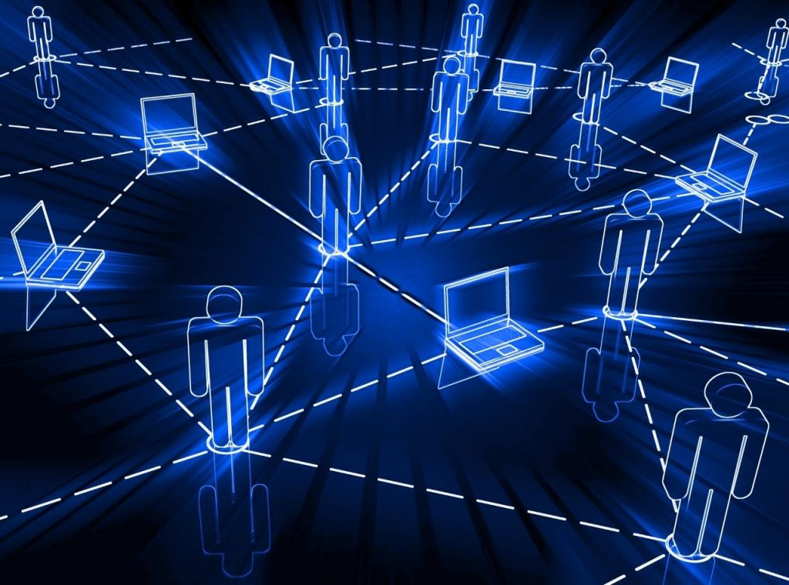
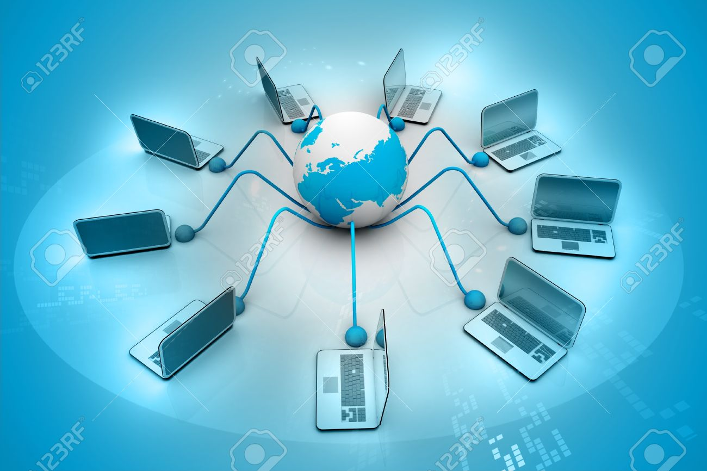

¿Qué es una red?
En informática, una red (también llamada red informática o red de computadoras) es la interconexión de un número determinado de computadoras mediante dispositivos alámbricos o inalámbricos. A través de impulsos eléctricos, ondas electromagnéticas u otros medios físicos, estos envían y reciben información en forma de paquetes de datos. Las redes permiten a los sistemas informáticos actuar de manera conjunta y organizada, compartir recursos y emitir y recibir mensajes, gracias a una serie de códigos y estándares que garantizan su correcta comunicación. A estos estándares de comunicación se los conoce como protocolos informáticos; el más común de ellos actualmente es el TCP/IP.
La aparición de las redes, a finales del siglo XX, revolucionó el modo de comprender la informática y abrió un nuevo campo dentro de esta disciplina para atender las necesidades de mejoría, seguridad y operatividad de la comunicación informática. Actualmente, muchos de los procesos de administración y procesamiento de información dependen de redes de telecomunicaciones, como internet o las diversas formas de intranet empresariales u organizacionales.
¿Por qué se llaman “redes”?
A este tipo de conexiones informáticas de enjambre se las conoce como “redes” por un traslado del inglés net, con el que se las conoció inicialmente. En sus orígenes, la información fluía entre los distintos terminales conectados a través de cables de cobre, que conformaban figuradamente una malla o red tejida.
Elementos de una red
Las redes informáticas están constituidas principalmente por computadoras interconectadas, lo cual requiere de la participación de ciertos tipos de elementos, como son:
Clientes o terminales: Son el conjunto de computadoras interconectadas que permiten a los usuarios acceder a la red informática. A menudo se las conoce también como “máquinas de trabajo”, ya que dependen de la presencia de un operador humano.
Servidores: Son computadoras conectadas a la red en las que no opera ningún usuario, sino que se dedican a procesar el flujo de datos de la red, atendiendo a las peticiones de los terminales.
Elementos de hardware: Son los dispositivos y periféricos que permiten el establecimiento de la comunicación en red, como son las tarjetas de red, módems y enrutadores, o antenas repetidoras, en el caso de las redes inalámbricas.
Elementos de software: Son los programas requeridos para administrar el hardware de comunicaciones, como es el Sistema Operativo de Redes (también llamado NOS o Network Operating System), y los protocolos de comunicación, como TCP/IP.
Medios físicos de transmisión: Son los elementos encargados de la transmisión física de la información, ya sea el cableado o las ondas electromagnéticas.